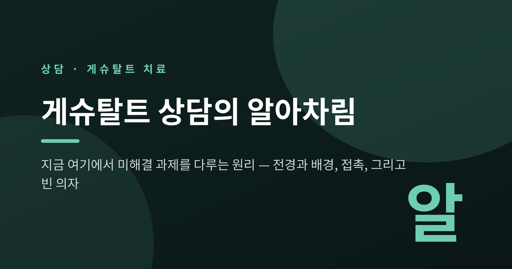
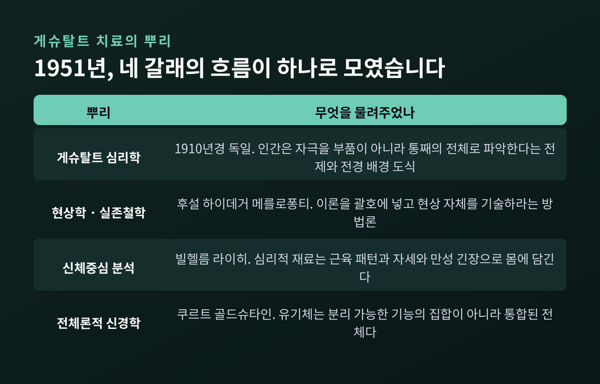
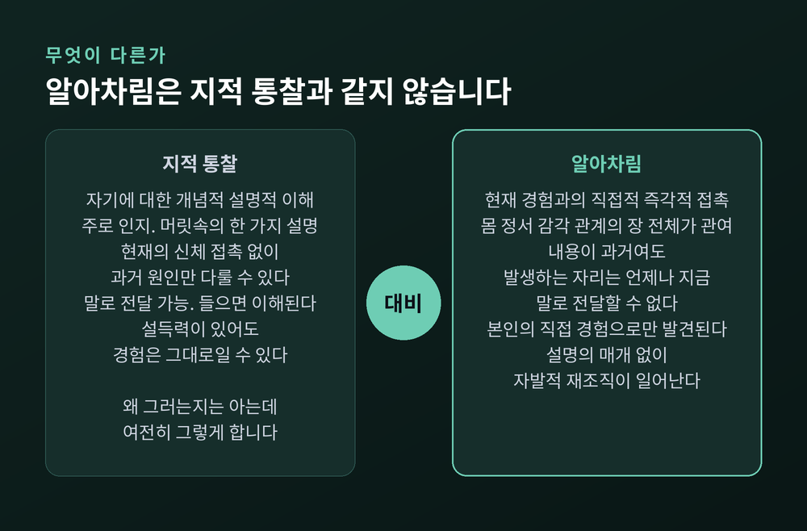
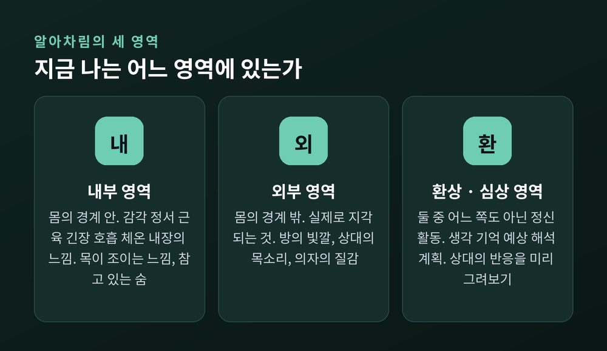
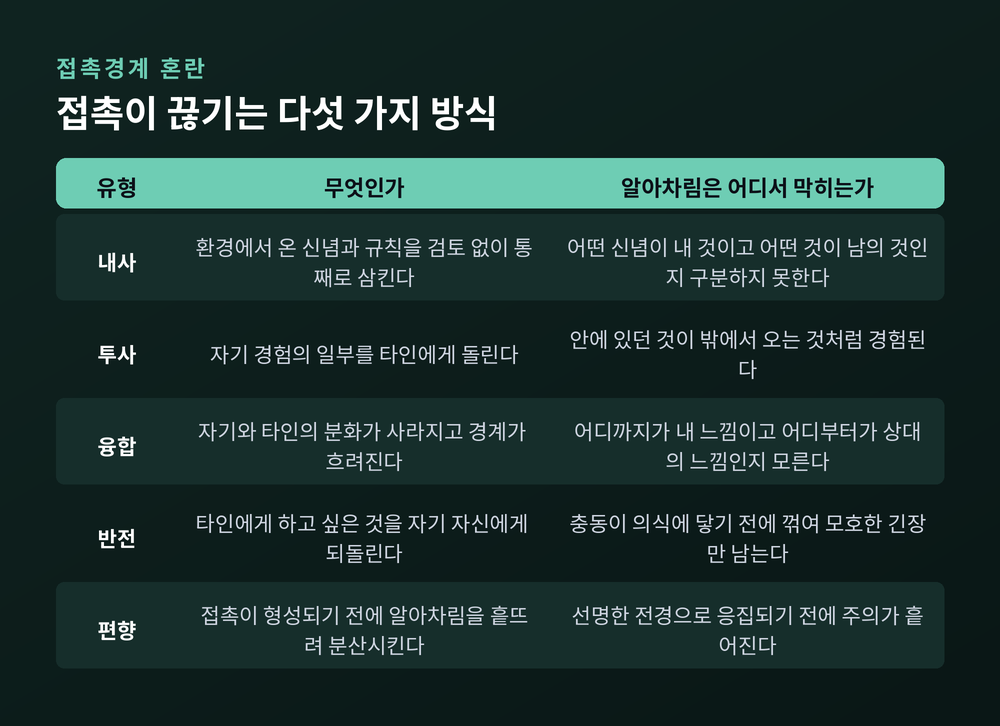
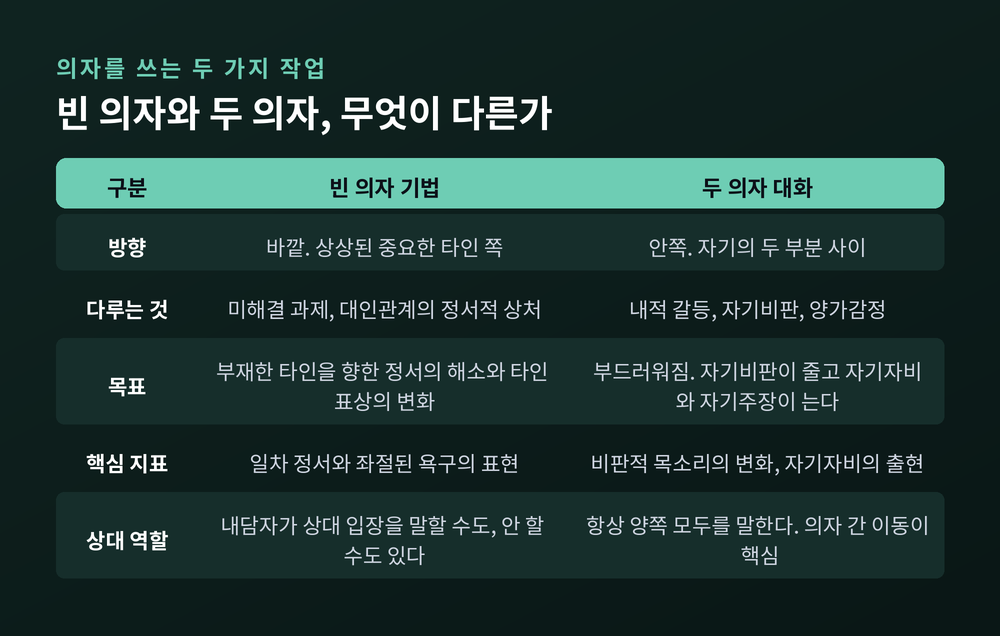
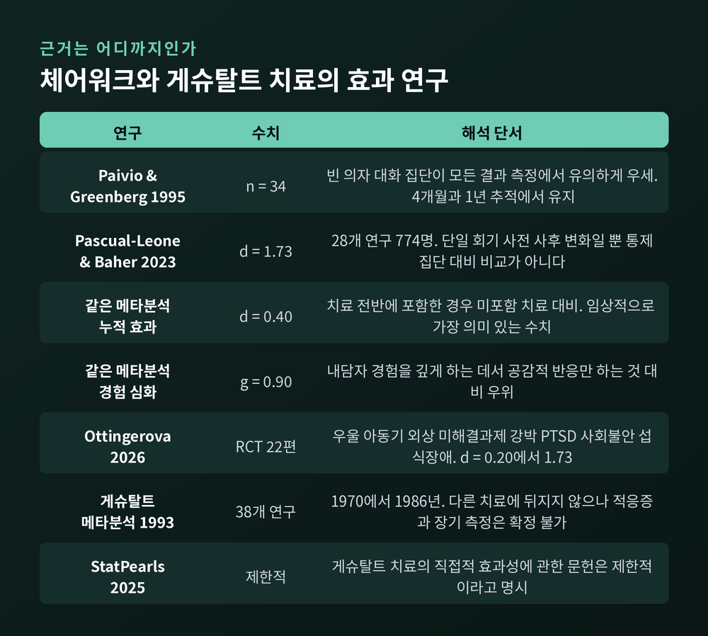

전경과 배경, 접촉경계 혼란, 그리고 빈 의자 기법의 근거와 한계

이번 글에서는 게슈탈트 상담의 중심 개념인 알아차림(awareness)을 정리해 보겠습니다. 왜 이 접근이 과거의 원인을 캐묻는 대신 "지금 무엇을 경험하고 있는지"를 묻는지, 그리고 끝나지 않은 감정이 어떻게 현재의 관계로 계속 되돌아오는지를 함께 살펴봅니다. 효과 연구가 어디까지 왔고 어디서 멈춰 있는지도 숨기지 않고 적겠습니다.

게슈탈트 치료는 프리츠 펄스(Fritz Perls), 로라 펄스(Laura Perls), 폴 굿맨(Paul Goodman)이 1940~1950년대에 함께 발전시킨 현상학적 심리치료입니다. 이론이 처음 한 권으로 묶인 것은 1951년입니다. 『Gestalt Therapy: Excitement and Growth in the Human Personality』라는 책이었고, 저자는 프리츠 펄스, 로버트 헤퍼라인, 폴 굿맨 세 사람으로 표기되었습니다.
로라 펄스의 이름은 그 표지에 없습니다. 접근법의 형성에 상당한 기여를 했음에도 출간된 저작에서 기여자로 인정받지 못했다는 지적이 여러 자료에 남아 있습니다. 그는 프랑크푸르트에서 아데마르 겔프와 쿠르트 골드슈타인의 작업을 직접 접했고, 실존주의적 배경을 갖고 있었습니다. 훗날 뉴욕 게슈탈트 치료 학파를 이끌며 호흡과 움직임 같은 신체 중심 기법을 들여온 사람도 로라 펄스입니다.
뿌리는 하나가 아닙니다. 1910년경 독일에서 등장한 게슈탈트 심리학이 "인간은 자극을 낱낱의 부품이 아니라 통째의 전체로 파악한다"는 전제를 제공했습니다. 후설·하이데거·메를로퐁티로 이어지는 현상학이 이론을 괄호에 넣고 현상 자체를 보라는 방법론을 주었습니다. 여기에 빌헬름 라이히의 신체중심 분석, 쿠르트 골드슈타인의 전체론적 신경학, 그리고 선불교와 도가의 영향이 겹쳤습니다.
프리츠 펄스는 원래 프로이트 학파 정신분석가였습니다. 프로이트가 사회적 적응과 과거 경험을 강조한 데 반해, 펄스는 현재 순간과 개인의 표현으로 무게중심을 옮겼습니다. 그는 게슈탈트를 "모든 알아차림의 환원 불가능한 현상"이라고 불렀습니다.
게슈탈트 심리학에서 온 도식 하나가 이 치료의 뼈대입니다. 전경(figure)과 배경(ground)입니다.
우리는 눈앞의 모든 것을 동등하게 지각하지 않습니다. 어떤 것이 또렷하게 떠오르고, 나머지는 흐릿한 배경으로 물러납니다. 배경은 대체로 알아차림 바깥에 있고, 시점에 따라 서로 다른 것이 전경으로 올라옵니다.
국내 자료는 이 관계를 이렇게 정리합니다. 알아차림이란 개체가 유기체-환경의 장에서 벌어지는 현상을 전경으로 떠올려 게슈탈트를 형성하는 행위이고, 접촉이란 그렇게 형성된 게슈탈트를 행동을 통해 해소하는 행위라는 것입니다.
건강한 순환은 네 박자입니다. 떠오르고, 접촉하고, 해소하고, 배경으로 물러납니다. 목이 마르면 갈증이 전경이 되고, 물을 마시면 해소되고, 갈증은 배경으로 사라집니다. 클리블랜드 게슈탈트 연구소가 정리한 경험 순환 모델은 이를 감각 → 형태 형성 → 동원 → 행동 → 접촉 → 물러남의 여섯 단계로 나눕니다.
문제는 이 순환이 완결되지 못할 때 생깁니다.
여기서 오해가 자주 생깁니다. 알아차림을 "자기를 이해하는 것"으로 읽는 것입니다.
게슈탈트 치료가 말하는 알아차림은 유기체가 자기 경험과 환경에 대해 갖는 직접적·현재적·신체화된 접촉입니다. 생각이 아닙니다. 게리 욘테프의 표현을 빌리면, 자기 존재에 '관해' 말하거나 생각하는 것이 아니라 지금 실제로 있는 것과의 직접적 접촉입니다. 분노에 대한 이론을 갖는 것이 아니라, 가슴의 열기와 굳어지는 턱과 움직이고 싶은 충동을 느끼는 쪽입니다.
프리츠 펄스의 유명한 문장이 이 결을 잘 보여줍니다. "머리를 버리고 감각으로 오라."

이 구분이 왜 중요한지는 상담실에서 흔히 보이는 장면 하나로 설명됩니다. 자기 패턴을 정확하게 설명할 수 있는 사람이 있습니다. 왜 친밀함이 어려운지, 자기비판이 어디서 시작됐는지, 회피가 어떤 기능을 하는지 조리 있게 말합니다. 그런데 경험과 행동은 그대로입니다. "왜 그러는지는 아는데, 여전히 그렇게 합니다."
통찰이 틀린 것이 아닙니다. 정확할 수도 있습니다. 다만 지적 이해만으로는 유기체가 자기 경험과 직접 접촉하는 능력이 회복되지 않는다는 뜻입니다.
그래서 게슈탈트 치료는 다른 전통보다 한 걸음 더 나간 주장을 합니다. 대부분의 접근이 알아차림을 변화의 전제조건으로 보는 데 반해, 이 접근은 알아차림 자체가 변화라고 봅니다. 알아차림 뒤에 변화가 오는 것이 아니라, 자기 경험에 온전히 현존하는 것만으로 유기체가 스스로 재조직된다는 것입니다.
물론 여기에는 단서가 붙습니다. 알아차림이 자동으로 행동을 바꾸지는 않습니다. 온전히 알아차리고도 같은 패턴을 반복할 수 있습니다. 알아차림이 주는 것은 없던 선택 가능성입니다. "늘 하던 그것을 지금 막 하려 한다"고 알아차리는 짧은 틈이 생기고, 그 틈에서만 다른 선택이 가능해집니다.
임상에서 가장 자주 쓰이는 도구 중 하나가 알아차림을 세 영역으로 나눠 보는 방식입니다.

내부 영역은 몸의 경계 안입니다. 감각, 정서, 근육 긴장, 호흡, 체온, 내장의 느낌입니다. 목이 조이는 느낌, 가슴의 열기, 참고 있는 숨 같은 것들입니다.
외부 영역은 몸의 경계 밖입니다. 방의 빛깔, 상대의 목소리, 의자의 질감처럼 실제로 지각되는 것들입니다.
환상과 심상 영역은 그 둘 중 어느 쪽도 아닌 정신 활동입니다. 생각, 기억, 예상, 해석, 계획입니다. 상대의 반응을 미리 그려보는 것, 스치는 눈길을 못마땅함으로 읽는 것이 여기에 속합니다.
심리적 어려움은 흔히 세 영역의 불균형으로 나타납니다. 환상 영역이 과도하게 발달하고, 내부와 외부 영역이 위축되는 형태입니다. 분석과 서사 구성에는 매우 능한데 지금 몸에서 무슨 일이 일어나는지는 잘 모르는 상태입니다.
환상 영역 자체가 문제인 것은 아닙니다. 계획하고 기억하고 해석하는 기능은 살아가는 데 필요합니다. 문제는 영역 사이를 유연하게 오가는 능력을 잃는 것입니다.
미해결 과제(unfinished business)는 게슈탈트 치료의 중심 개념입니다. 표현되지 못한 분노, 고통, 두려움이 여기 속합니다.
접촉경계에 장애가 생기면 게슈탈트 형성이 방해받고, 그 결과 미해결 과제가 남습니다. 남은 과제는 배경으로 물러나지 못합니다. 여전히 전경 근처를 맴돌면서 삶의 새로운 과제에 집중하는 것을 막고, 현실과의 접촉을 방해합니다.
정서중심치료는 이를 더 좁혀서 정의합니다. 중요한 타인과의 관계에서 한 번도 해소에 이르지 못한 정서적 상황이며, 현재의 경험과 관계에 계속 조직화 영향을 행사한다는 것입니다.
일반화된 예를 하나 들어보겠습니다. 어린 시절 자기 이야기를 끝까지 들어준 적 없는 양육자 밑에서 자란 사람이 있다고 가정합니다. 그때 하지 못한 말과 인정받지 못한 욕구가 완결되지 못한 채 남습니다. 성인이 된 뒤, 회의에서 말이 끊길 때마다 상황에 비해 과도한 분노가 올라옵니다. 지금의 상대가 특별히 무례해서가 아닙니다. 끝나지 않은 장면이 지금의 장면 위로 겹쳐 올라오는 것입니다.
미해결 과제를 완결시켜야 비로소 새로운 접촉이 가능해진다는 것이 이 이론의 논리입니다.
게슈탈트 치료는 접촉이 끊기는 지점을 다섯 가지로 정리합니다. 내사, 투사, 융합, 반전, 편향입니다.

내사(introjection)는 환경에서 온 신념과 규칙을 검토 없이 통째로 삼키는 것입니다. 삼킨 사람은 어떤 신념이 자기 것이고 어떤 것이 남의 것인지 구분하는 알아차림을 잃습니다.
투사(projection)는 자기 경험의 일부를 타인에게 돌리는 것입니다. 안에 있던 것이 밖에서 오는 것처럼 경험됩니다.
융합(confluence)은 자기와 타인의 분화가 사라지는 것입니다. 경계가 흐려지고, 어디까지가 내 느낌이고 어디부터가 상대의 느낌인지 알아차리지 못하게 됩니다.
반전(retroflection)은 타인에게 하고 싶은 것을 자기 자신에게 되돌리는 것입니다. 충동이 의식에 닿기 전에 방향이 꺾입니다. 그래서 본인은 분노를 느끼지 못하고 모호한 긴장이나 두통만 경험하기도 합니다.
편향(deflection)은 접촉이 형성되기 전에 알아차림을 흩뜨려 분산시키는 것입니다. 선명한 전경으로 응집되기 전에 주의가 흩어집니다.
중요한 것은 이들을 병리로만 보지 않는다는 점입니다. 다섯 가지 모두 원래는 온전한 적응으로 시작된 것입니다. 목표는 이를 없애는 것이 아니라 알아차림으로 가져와, 자동적 차단이 아니라 자유로운 선택이 되게 하는 것입니다.
예전에는 이것들을 '접촉방해'나 '저항'으로 불렀습니다. 지금의 관계적 관점은 이를 제거해야 할 병리가 아니라, 주어진 상황에서 한 사람이 연속성과 안전을 유지해 온 의미 있는 방식으로 봅니다. 국내 학계에서도 '접촉방해'에서 '관계적 접촉의 연속체'로 개념이 이동하고 있습니다.
게슈탈트 상담의 질문 방식은 특징이 뚜렷합니다.
치료자는 "왜 그렇게 느끼시나요?"라고 묻지 않습니다. 이 질문은 설명적 이론화를 부릅니다. 대신 "지금 무엇을 경험하고 계신가요?"라고 묻습니다. 이 질문은 직접적인 현상학적 기술을 부릅니다.
후설의 에포케 — 이론적 전제를 괄호에 넣고 현상 자체에 주목하기 — 에 대응하는 임상 실천이 현상학적 탐구입니다. 진단 범주와 인과적 설명을 잠시 옆으로 치우고, 내담자와 함께 지금 실제로 경험되는 것에 주의를 둡니다.
자주 쓰이는 질문들은 이런 형태입니다.
치료자의 자세는 진단적 조사가 아니라 진정한 호기심입니다. 해석을 구성할 정보를 모으는 것이 목적이 아니라, 내담자가 스스로 자기 경험을 점점 더 정밀하게 기술하도록 지지하는 것이 목적입니다.
과거를 다루지 않는다는 뜻은 아닙니다. 다만 과거를 분석해 현재를 설명하는 대신, 과거가 지금 이 순간 어떻게 살아 있는지를 봅니다. 질문은 "당신에게 무슨 일이 있었나요"가 아니라 "그 경험을 이 방으로 가져오는 지금, 당신 안에서 무슨 일이 일어나고 있나요"에 가깝습니다.
이 태도의 이론적 근거를 한 문장으로 압축한 것이 아놀드 바이서의 역설적 변화 이론입니다. 1970년에 나온 이 짧은 글은 펄스의 저작을 제외하면 게슈탈트 문헌에서 가장 많이 인용됩니다.
"변화는 자신이 아닌 것이 되려 할 때가 아니라, 자신인 것이 될 때 일어난다."
그래서 게슈탈트 치료자는 '변화시키는 사람'의 역할을 거부합니다. 내담자가 지금 있는 자리에 그대로 있도록 격려합니다. 역설적이지만, 그 머무름에서 변화가 시작된다고 봅니다.
게슈탈트에서 '실험(experiment)'이란 회기 안에서 무언가 다른 것을 시도해 보고 무엇이 알아차림에 떠오르는지 보는 초대입니다. 언어적 성찰만으로는 닿지 않는 곳까지 알아차림을 넓히는 방법입니다.
실험은 대개 아주 작습니다. 한 문장을 다시 말해 보고 몸의 반응을 살피기. 무심코 나오던 손동작을 조금 과장해 보기. 잠시 침묵하고 무엇이 올라오는지 알아차리기. 이 정도의 규모입니다.
신체 신호는 부차적 증상이 아니라 일차 자료로 다뤄집니다. 참았던 숨과 굳은 턱은 '진짜 불안'의 그림자가 아니라 불안을 구성하는 부분입니다. 그래서 거기에 알아차림을 가져가는 것이 곧 불안에 알아차림을 가져가는 것이 됩니다.
가장 널리 알려진 실험이 의자를 쓰는 작업입니다.

빈 의자 기법(empty chair)은 상상된 인물을 빈 의자에 두고 현재시제 직접화법으로 말을 건네는 방식입니다. 어법이 중요합니다. "나는 아버지에게 화가 난다"가 아니라 "나는 당신에게 화가 나 있어요"입니다. 방향은 바깥, 즉 상상된 중요한 타인 쪽입니다. 주된 표적이 미해결 과제입니다.
두 의자 대화(two-chair work)는 방향이 안쪽입니다. 자기의 두 부분이 대립할 때 씁니다. 한 의자에서는 비판하는 부분이, 다른 의자에서는 경험하고 열망하는 부분이 말합니다. 대화가 깊어지면 정서중심치료가 '부드러워짐(softening)'이라 부르는 지점에 닿습니다. 비판하는 목소리가 이해 쪽으로 옮겨가고, 경험하는 자기는 더 온전한 자기주장 쪽으로 옮겨갑니다.
한 가지 짚고 갈 것이 있습니다. 의자는 소품이 아닙니다. 물리적이고 공간적인 차원 자체가 효과의 일차 기제라는 것이 연구자들의 견해입니다. 자기를 물리적 형태로 밖에 내놓는 것, 그리고 몸으로 연출하는 것이 핵심 변화 기제로 지목됩니다.
그리고 이 작업은 혼자 하는 자기대화와 다릅니다. 치료자의 물리적 현존, 의자의 공간 구조, 조율이 만드는 안내와 공동조절이 모두 관여합니다. 사적인 성찰에서 일어나는 어떤 것과도 근본적으로 다르다는 것이 문헌의 공통된 지적입니다.
빈 의자 기법은 게슈탈트 안에만 머물지 않았습니다.
1980년대부터 레슬리 그린버그(Leslie Greenberg), 로라 라이스, 로버트 엘리엇이 정서중심치료(EFT) 안에서 이를 체계화했습니다. 단순한 기법 차용이 아니었습니다. 독자적인 근거기반 임상 모델 안에서 이론적으로 재구성한 작업이었고, 뒤이은 연구 프로그램이 현재 체어워크 근거의 대부분을 만들어냈습니다.
EFT는 빈 의자 과제의 해소 지표를 조작적으로 정의했습니다. 타인에 대한 비난에서 일차 정서와 그 밑의 욕구 표현으로 옮겨가는 이동, 그리고 상대를 표상하는 방식의 변화입니다. 신뢰롭게 코딩할 수 있게 되면서 변화 기제 연구가 가능해졌습니다.

구체적인 수치를 확인해 두겠습니다.
가장 고전적인 근거는 Paivio와 Greenberg의 1995년 연구입니다. 중요한 타인에 대해 해소되지 않은 감정을 가진 내담자 34명을 빈 의자 대화를 쓰는 경험적 치료와 심리교육 집단에 무선 할당했습니다. 경험적 치료 집단이 모든 결과 측정에서 유의하게 더 큰 향상을 보였고, 종결 시점과 추적 조사에서 모두 유지되었습니다. 평가는 치료 전후와 4개월, 1년 후에 이뤄졌습니다.
2023년에는 Pascual-Leone과 Baher의 메타분석이 나왔습니다. 28개 연구, 내담자 774명을 종합한 것으로 현재까지 가장 포괄적인 양적 종합입니다. 여기서 자주 인용되는 숫자가 d = 1.73입니다.
이 숫자는 조심해서 읽어야 합니다. 단일 회기의 사전-사후 변화이지, 통제집단 대비 비교도 아니고 시간이 지나도 유지되는 변화의 측정도 아닙니다. 체어워크가 만들어내는 정서 처리의 강도를 보여줄 뿐, 한 회기로 임상 문제가 해소된다는 뜻이 아닙니다. 같은 메타분석에서 단일 회기 체어워크는 다른 집중적 단일 회기 개입과 비교 가능한 수준이었습니다(차이 d = 0.02).
임상적으로 더 의미 있는 숫자는 따로 있습니다. 치료 전반에 체어워크를 포함한 경우, 포함하지 않은 치료 대비 누적 효과가 d = 0.40이었습니다. 또 내담자의 경험을 깊게 하는 데서는 공감적 반응만 하는 것보다 우위가 있었습니다(g = 0.90).
2026년 Ottingerová 등의 체계적 문헌고찰은 체어워크를 다룬 RCT 22편을 확인했습니다. 근거가 확인된 임상 영역은 우울, 아동기 외상, 미해결 과제, 강박장애, PTSD, 사회불안, 섭식장애였습니다. 효과크기 범위는 d = 0.20에서 1.73까지로 넓었습니다.
여기서 균형을 잡아야 합니다.
게슈탈트 치료 자체의 효과 근거는 생각보다 얇습니다. StatPearls는 "게슈탈트 치료의 직접적 효과성에 관한 문헌은 제한적"이라고 명시합니다. 1993년에 나온 메타분석은 1970년부터 1986년까지의 38개 연구를 모아 "비교 가능한 다른 치료법에 뒤지지 않는다"고 결론지었지만, 차별적 적응증이나 개인치료 세팅, 장기 측정에 관해서는 확정적 진술을 할 수 없다고 함께 적었습니다.
우울에 대한 결과는 엇갈립니다. 경도 우울에서는 게슈탈트 대화와 단순한 시간 경과 사이에 유의한 차이가 없었다는 연구가 있습니다. 반대로 빈 의자 기법을 포함한 통합 집단치료가 지속비애장애에서 우울 증상을 효과적으로 줄였다는 무선통제연구도 있습니다. 어느 한쪽으로 단정할 단계가 아닙니다.
근거 자체의 한계도 문헌이 스스로 인정합니다. 연구들의 이질성이 크고, 개별 연구 다수가 소규모이며, 긍정적 결과가 출판될 가능성이 높습니다. 12개월 이상의 장기 유지 자료는 대부분의 양식에서 부족합니다.
무엇보다 이 접근의 핵심인 알아차림 자체를 분리된 인과 기제로 통제 실증한 연구는 아직 충분하지 않습니다. 알아차림의 중심성에 대한 지지는 상당 부분 임상 이론과 현상학적 논증, 실무자 경험에 기대고 있습니다. 이 점은 게슈탈트 진영 스스로도 인정하는 부분입니다.
마지막으로 안전에 관한 이야기를 꼭 남기고 싶습니다.
빈 의자 기법은 유튜브나 자기계발서에서 가볍게 소개되곤 합니다. 하지만 문헌이 명시하는 금기와 주의 사항은 결코 가볍지 않습니다.
체어워크가 적절하지 않은 경우로 다음이 꼽힙니다. 급성 정신증이나 심한 해리가 있는 경우입니다. 연출에 몰입하면서도 관찰자의 시점을 함께 유지하는 이중 알아차림이 어렵기 때문입니다. 치료 관계가 아직 충분히 형성되지 않은 초기 단계, 급성 자살 위기, 그리고 임상적 우선순위가 정서 처리가 아니라 안정화인 경우도 포함됩니다. 의미 있는 외상 이력이 있다면 속도 조절과 강도 조절에 외상 정보 기반 훈련과 세심한 임상 판단이 필요합니다.
경계성 성격장애 환자 29명을 대상으로 한 질적 연구에서는 초기 반응으로 회의감, 수치심, 우스꽝스럽다는 느낌이 흔하게 보고되었습니다. 참여를 도운 것은 진정한 안전의 제공, 과정에 대한 명확한 안내, 개인의 필요에 맞춘 유연한 적용, 그리고 충분한 디브리핑 시간이었습니다. 모두 훈련된 상담자가 곁에 있을 때 가능한 것들입니다.
앞에서 본 d = 1.73이라는 숫자를 다시 떠올려 봅니다. 그것은 이 작업이 만들어내는 정서적 강도를 나타냅니다. 강도는 임상적 자산이면서 동시에 책임입니다. 준비 없이 열면 치료가 아니라 고통만 남을 수 있습니다.
또 하나 흔한 오해를 짚겠습니다. 체어워크는 "부모에게 화를 쏟아내는 것"이 아닙니다. 분노가 목표가 아닙니다. 지금 실제로 있는 것이 무엇이든, 그것과의 진정한 접촉이 목표입니다.
정리하면 이렇습니다.
게슈탈트 상담은 원인을 캐서 설명을 완성하는 대신, 지금 이 순간의 경험으로 돌아오게 합니다. 끝나지 않은 감정이 왜 남았는지를 밝히기보다, 그것이 지금 몸과 관계에서 어떻게 되살아나는지를 함께 봅니다. 알아차림이 회복되면 없던 틈이 생기고, 그 틈에서 선택이 가능해진다는 것 — 이것이 이 접근이 붙잡고 있는 하나의 원리입니다.
다만 이 글에서 소개한 기법들은 읽어서 아는 것과 실제로 하는 것의 거리가 매우 먼 작업입니다. 미해결 과제를 건드리는 일은 혼자 감당하기 어려운 감정을 열어젖히기도 합니다. 지금 반복되는 감정이나 관계 패턴 때문에 힘드시다면, 게슈탈트 훈련을 받은 상담심리사나 정신건강의학과 전문의와 함께 시작하시길 권합니다. 안전한 관계 안에서 다룰 때 비로소 이 작업은 치료가 됩니다.
바이서의 문장을 다시 빌리자면, 우리가 서두를 곳은 바뀐 자리가 아니라 지금 서 있는 자리입니다. 지금 여기서 무엇을 알아차리고 계신지요.